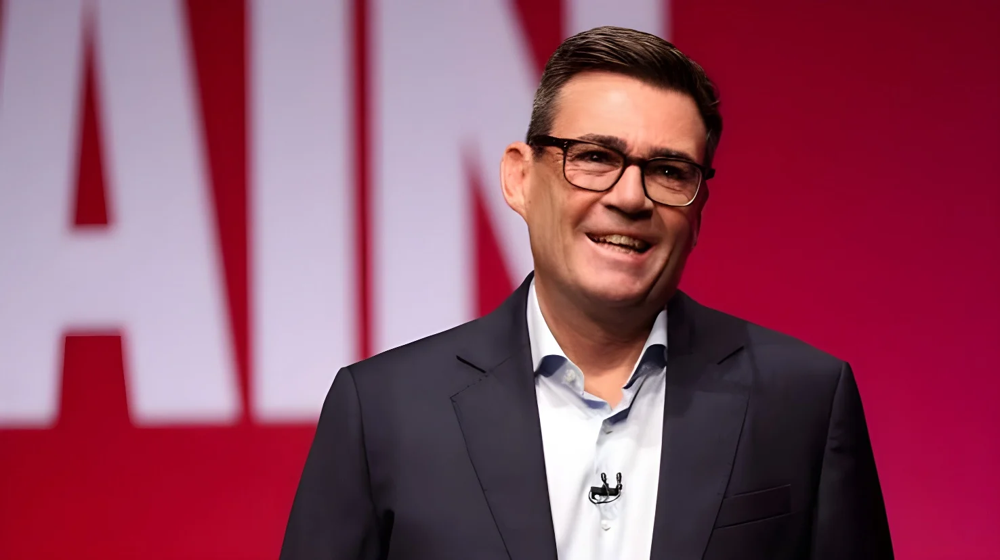

Au congrès du Parti travailliste à Liverpool, le Premier ministre Andy Burnham a dit que le Brexit avait fait « plus de mal que de bien » et qu'il présenterait plusieurs options pour l'avenir des relations avec l'Europe lors du prochain sommet UK-UE. Le lendemain, sur la BBC, il a ajouté que le pays pourrait « aller jusqu'au bout », c'est-à-dire rejoindre l'Union. Aucune décision n'est prise, mais c'est la première fois depuis 2016 qu'un chef de gouvernement britannique évoque ce scénario.
Le Premier ministre a donc ouvert quatre voies : le statu quo (« certainement une option »), une union douanière, un retour dans le marché unique, ou l'adhésion pleine et entière. Sur la question d'un référendum, interrogé sur sa possible inscription dans un futur programme travailliste, il a répondu : « Oui, tout est possible. Je pense que là où nous en sommes n'est pas suffisant », tout en soulignant que ce n'était pas approprié pour l'instant.
Surtout, le gouvernement reste tenu par son programme de 2024, qui excluait le retour dans le marché unique et dans l'union douanière pour toute la législature. Selon plusieurs médias, M. Burnham entend défendre une nouvelle orientation devant les électeurs aux prochaines législatives, prévues en 2029. Dès le 22 septembre déjà, il avait refusé d'exclure une promesse de retour dans le prochain programme du Labour : cette question était, disait-il, « pour un autre jour ».
Au Royaume-Uni, la droite a immédiatement dénoncé la manœuvre. Le vice-président de Reform UK, Richard Tice, a accusé le Premier ministre de vouloir « nous faire rentrer en douce à Bruxelles par la porte de derrière ». Nigel Farage, depuis Doncaster, a estimé que M. Burnham avait « ouvert la porte à Reform de façon extraordinaire » dans le nord de l'Angleterre, et qu'un référendum sur l'Europe n'apporterait pas l'unité mais « la division complète ». Chez les conservateurs, le numéro deux du parti, Alex Burghart, a reproché au Labour de rouvrir les divisions du Brexit.
Les libéraux-démocrates, eux, réclament des actes plutôt que des « peut-être » : leur chef Ed Davey défend la proposition de son parti de rejoindre le marché unique et l'union douanière.
Sommet UK-UE, dont la date n'est pas encore fixée ; Ursula von der Leyen et Antonio Costa y sont attendus.
Sur la BBC, Burnham cite quatre options, dont « aller jusqu'au bout » ; Emmanuel Macron répond « Welcome back ».
Discours au congrès travailliste de Liverpool : le Brexit a fait « plus de mal que de bien ».
Andy Burnham devient Premier ministre, après la démission de Keir Starmer annoncée le 22 juin.
Sous Keir Starmer, sommet de réinitialisation avec l'UE ; trois chantiers restent ouverts : normes sanitaires, marché du carbone, mobilité des jeunes.
Le Royaume-Uni quitte officiellement l'Union européenne.
Référendum sur le Brexit : le « Leave » l'emporte.
Le mardi 29 septembre 2026, dans son discours au congrès travailliste de Liverpool, Andy Burnham a affirmé : « Je ne peux pas vous dire honnêtement que là où nous en sommes est suffisant. Le Brexit a fait plus de mal que de bien. » Il a annoncé qu'il utiliserait le sommet entre le Royaume-Uni et l'Union européenne, attendu avant la fin de l'année, pour mettre sur la table plusieurs options sur ce que pourrait être la relation à l'avenir, sans en détailler le contenu.
C'est le lendemain, mercredi 30 septembre, sur la BBC (émission « Today », Radio 4), qu'il a précisé ces options : « Nous pourrions rester comme nous sommes… Nous pourrions regarder ce que George Osborne a dit sur une union douanière, ce que les libéraux-démocrates ont dit sur le marché unique, ou nous pourrions aller jusqu'au bout. » Il a dit vouloir « chercher un consensus » dans le pays autour d'une de ces options.
À l'étranger, l'accueil est chaleureux dans certaines capitales. Emmanuel Macron a lancé en anglais « Welcome back », puis expliqué en français que si les Britanniques veulent revenir et si leur Premier ministre va dans cette direction, « c'est une très bonne nouvelle ». Le Premier ministre espagnol Pedro Sánchez a dit que son pays accueillerait le Royaume-Uni « à bras ouverts ».
À Bruxelles, le ton est plus prudent. Un porte-parole de la Commission a répondu : « Pas de boule de cristal de notre côté de la table ». Un responsable européen a jugé que cela « améliore le ton », mais que l'Union ne changerait pas son approche « parce qu'il y a une belle musique en fond sonore ». Les Vingt-Sept attendent des actes : les négociations en cours portent sur les normes sanitaires, le marché du carbone et la mobilité des jeunes.
« Je ne peux pas vous dire honnêtement que là où nous en sommes est suffisant. Le Brexit a fait plus de mal que de bien. »
— Andy Burnham, congrès du Labour, Liverpool (traduction)Le contexte d'opinion lui est favorable. Selon le suivi de YouGov (enquête des 24 et 25 septembre), 59 % des Britanniques soutiendraient un retour dans l'Union, contre 32 % d'opposants : c'est le niveau le plus haut de la série, contre 51 % en janvier 2024. Un autre sondage YouGov cité par la presse donne 56 %. Le sujet reste pourtant sensible : le Labour a gagné en 2024 en promettant de « faire fonctionner le Brexit ».
En parlant d'options plutôt que de promesse, Andy Burnham teste le terrain sans se lier les mains : son programme de 2024 l'interdit encore, et son prédécesseur, Keir Starmer, avait préféré réparer les liens sans rouvrir le débat sur l'adhésion. Un retour supposerait de longues négociations, et l'Union, qui a évoqué récemment un statut de « membre associé » pour le Canada, ne ferait pas de cadeau : les anciennes dérogations britanniques (euro, Schengen) restent un obstacle, et un expert juge l'adhésion « complètement irréaliste ». Le sommet de novembre dira si le discours se traduit en gestes concrets, avant l'épreuve des urnes de 2029.
At the Labour Party conference in Liverpool, Prime Minister Andy Burnham said Brexit had done "more harm than good" and that he would table several options for the future of relations with Europe at the next UK-EU summit. The next day, on the BBC, he added that the country could "go all the way", meaning rejoin the Union. No decision has been taken, but it is the first time since 2016 that a British head of government has raised the prospect.
The Prime Minister has thus opened four paths: the status quo ("definitely an option"), a customs union, a return to the single market, or full membership. Asked whether a referendum could appear in a future Labour manifesto, he answered: "Yes, things are possible. I think where we are isn't good enough", while stressing that it would not be appropriate right now.
Above all, the government remains bound by its 2024 manifesto, which ruled out rejoining the single market and the customs union for the whole parliament. According to several outlets, Mr Burnham intends to make the case for a new direction to voters at the next general election, due in 2029. Already on 22 September he had declined to rule out a pledge to rejoin in Labour's next manifesto: that question, he said, was "for another day".
At home, the right was quick to denounce the move. Reform UK deputy leader Richard Tice accused the Prime Minister of trying to "sneak us back into Brussels via the back door". Nigel Farage, speaking in Doncaster, said Mr Burnham had "opened the door to Reform in the most extraordinary way" in the north of England, and that a referendum on Europe would bring not unity but "complete division". Among the Conservatives, deputy leader Alex Burghart accused Labour of reopening the divisions of Brexit.
The Liberal Democrats want action rather than "maybes": their leader Ed Davey is defending his party's proposal to rejoin the single market and the customs union.
UK-EU summit, date not yet fixed; Ursula von der Leyen and Antonio Costa are expected to attend.
On the BBC, Burnham lists four options, including "going all the way"; Emmanuel Macron replies "Welcome back".
Speech at Labour's conference in Liverpool: Brexit has done "more harm than good".
Andy Burnham becomes Prime Minister after Keir Starmer's resignation, announced on 22 June.
Under Keir Starmer, a reset summit with the EU; three negotiating strands remain open: sanitary standards, carbon markets, youth mobility.
The United Kingdom formally leaves the European Union.
Brexit referendum: "Leave" wins.
On Tuesday 29 September 2026, in his speech to the Labour conference in Liverpool, Andy Burnham said: "I cannot say to you truthfully that where we are is good enough. Brexit has done more harm than good." He announced that he would use the summit between the United Kingdom and the European Union, expected before the end of the year, to table several options for what the relationship could look like in future, without spelling them out.
The following day, Wednesday 30 September, on the BBC's "Today" programme (Radio 4), he set out those options: "We could stay as we are… We could look at what George Osborne has said about a customs union, we could look at what the Liberal Democrats said about the single market, or we could go all the way." He said he wanted to "try to find consensus" in the country around one of them.
Abroad, the welcome is warm in some capitals. Emmanuel Macron said "Welcome back" in English, then explained in French that if the British want to return and their Prime Minister is moving in that direction, "I think that is very good news". Spain's Prime Minister Pedro Sánchez said his country would welcome Britain back "with open arms".
In Brussels the tone is more cautious. A Commission spokesperson replied: "No crystal ball on this side of the table." One EU official said it "improves the tone", but that the Union would not change its approach "because there's nice music in the background". The Twenty-Seven want deeds: current talks cover sanitary standards, carbon markets and youth mobility.
"I cannot say to you truthfully that where we are is good enough. Brexit has done more harm than good."
— Andy Burnham, Labour conference, LiverpoolPublic opinion is on his side. According to YouGov's tracker (fieldwork on 24 and 25 September), 59% of Britons would back rejoining the Union against 32% opposed: the highest level in the series, up from 51% in January 2024. Another YouGov survey cited in the press puts it at 56%. The subject remains sensitive, however: Labour won in 2024 by promising to "make Brexit work".
By speaking of options rather than a pledge, Andy Burnham is testing the ground without tying his hands: his 2024 manifesto still forbids a return, and his predecessor, Keir Starmer, preferred to mend ties without reopening the membership debate. A return would mean long negotiations, and the Union, which has recently floated an "associate member" status for Canada, would give no free pass: Britain's old opt-outs (euro, Schengen) remain an obstacle, and one expert calls full membership "completely unrealistic". The November summit will show whether words turn into concrete steps, ahead of the 2029 test at the ballot box.